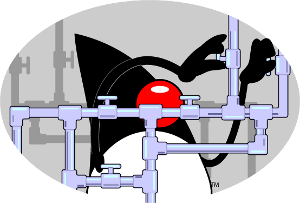

JVM Brasil
Falando de JVM em 24-25 de outubro na PUC-SP Consolação.
Falando de JVM em 24-25 de outubro na PUC-SP Consolação.
A máquina virtual Java, a JVM, é certamente a máquina virtual mais utilizada no mundo, vale lembrar que como o seu foco é a leitura de bytecode, e não de apenas código Java, m O JVM Brasil, nasceu com o objetivo de falar de assuntos relacionados a esse grande software, assim: Tunning da JVM, funcionamento interno, novas API e melhorias internas, lingua
Nessa primeira edição o evento será realizado em dois dias:
O evento será realizado nos dias 24 e 25 de outubro na PUC-Consolação em São Paulo.